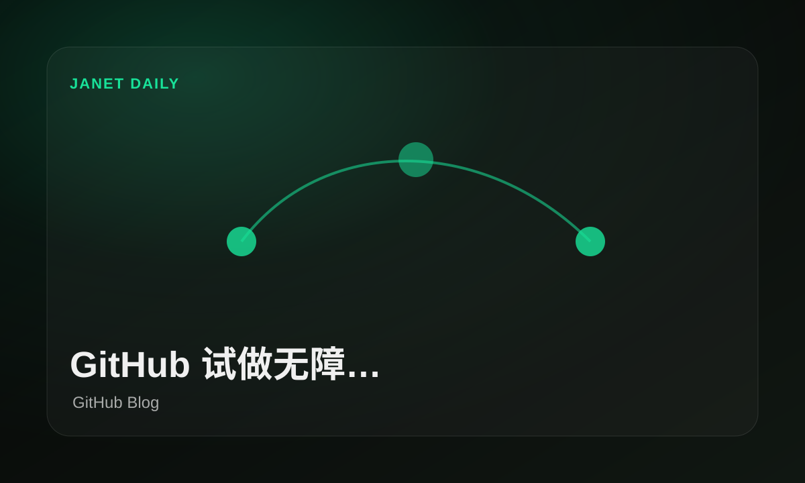
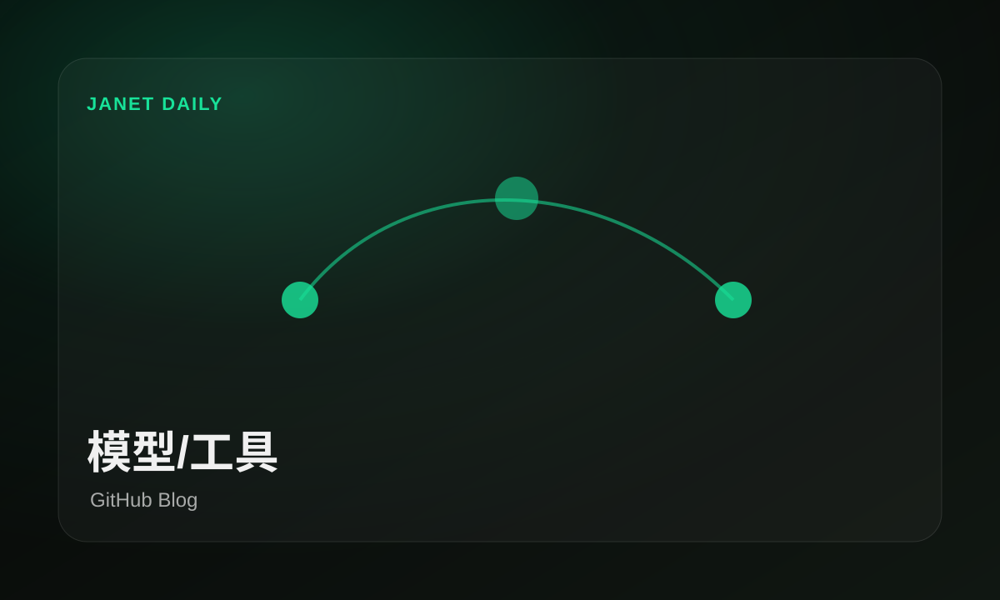
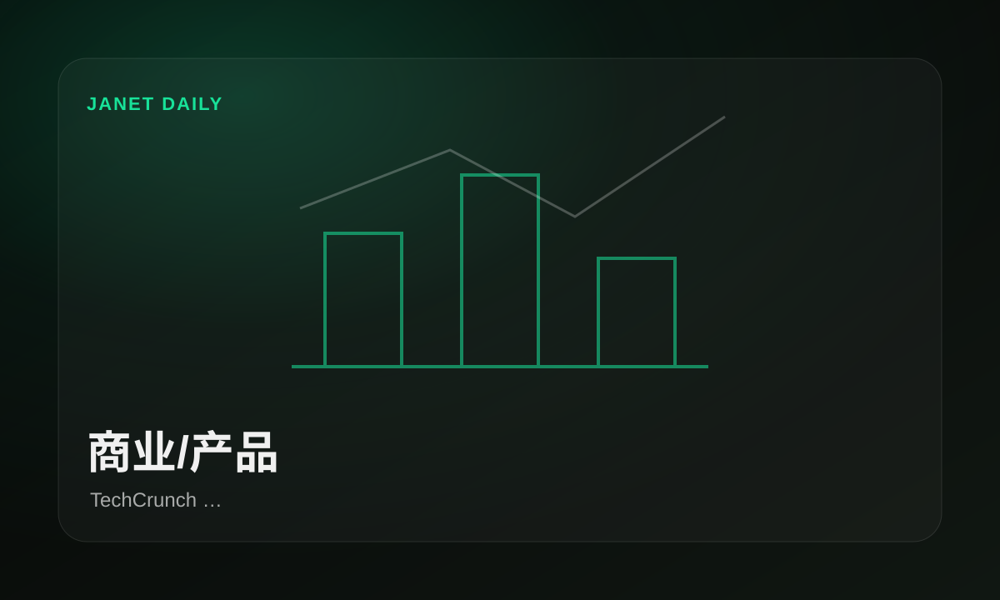

GitHub 围绕开发入口放出新信号
原文：Raising the bar: Quality, shared responsibility, and the future of GitHub’s bug bounty...GitHub 给出了一条关于开发入口的新信号，适合和今天其他新闻一起看，不必单独拔高。
重点不是多一个按钮，是开发者每天工作的入口又被模型咬住一块。
原文本期从公开 RSS / Atom / official feeds 中筛出 7 条窗口内新闻，Janet 已改写为中文优先版本。
今天窗口里，GitHub Blog、TechCrunch AI的信号集中在工具链、开源研究和产品落地：不用先背英文标题，也能看懂谁在推进、影响谁、下一步该盯什么。


模型/工具模型和工具链在往真实工作流里收口。
GitHub 围绕开发入口放出新信号 · GitHub Blog开源与论文继续补位，决定后续可复用空间。
TechCrunch 围绕商业动作放出新信号 · TechCrunch AI
商业/产品商业侧继续试水，重点看价格、客户和入口。
TechCrunch 围绕模型能力放出新信号 · TechCrunch AIGitHub 把智能体放进无障碍场景试水，重点不在炫技，而在工具能否真的替人完成具体流程。
GitHub 给出了一条关于开发入口的新信号，适合和今天其他新闻一起看，不必单独拔高。
重点不是多一个按钮，是开发者每天工作的入口又被模型咬住一块。
原文TechCrunch 给出了一条关于商业动作的新信号，适合和今天其他新闻一起看，不必单独拔高。
这条先按源站事实看，别急着拔高成时代宣言。
原文TechCrunch 给出了一条关于模型能力的新信号，适合和今天其他新闻一起看，不必单独拔高。
这条先按源站事实看，别急着拔高成时代宣言。
原文TechCrunch 给出了一条关于商业动作的新信号，适合和今天其他新闻一起看，不必单独拔高。
这条先按源站事实看，别急着拔高成时代宣言。
原文TechCrunch 给出了一条关于商业动作的新信号，适合和今天其他新闻一起看，不必单独拔高。
这条先按源站事实看，别急着拔高成时代宣言。
原文TechCrunch 这条更偏商业落地，重点看客户、价格和入口是否真的发生变化。
商业新闻的看点是钱和入口流向谁，口号先放一边。
原文